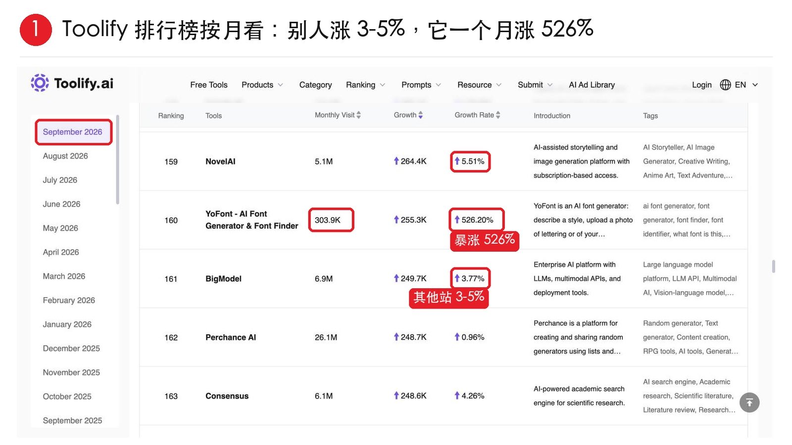
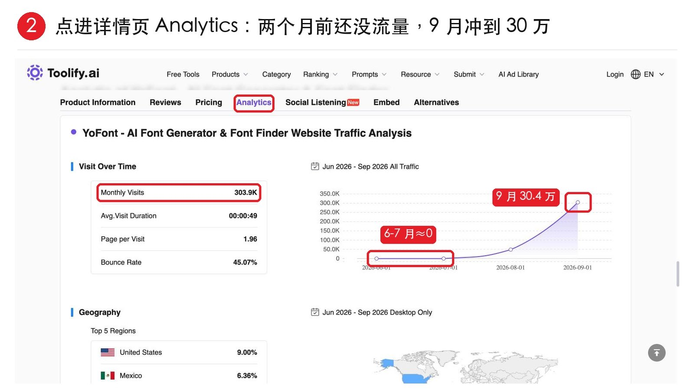
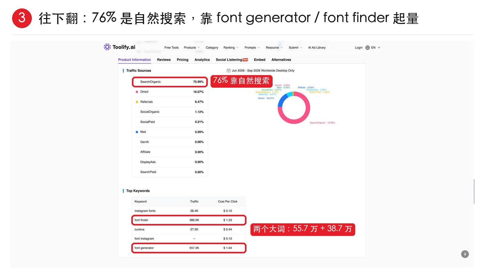
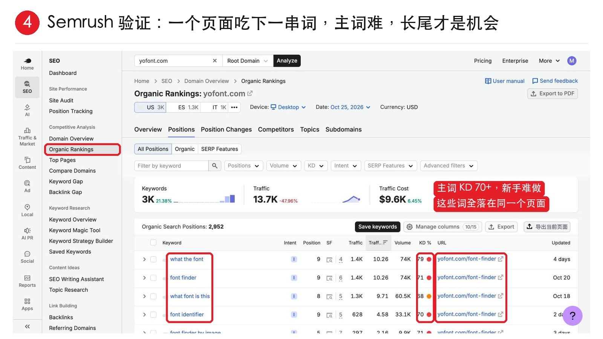

出海野路子，系列更新了！
这次用 Toolify 增长榜，挖正在起量的关键词。
思路很简单，一个站短时间内流量暴涨，而且主要靠自然搜索，就值得看看它靠哪些词拿到了流量。
拿 9 月榜单里的 AI 字体站 YoFont 举例。
1、榜单里其他站的涨幅在 3% ～ 5%，它一个月涨了 526%。
2、点进详情页看曲线，6、7 月几乎没流量，9 月就冲到了 30 万，流量是最近才起来的。
3、再看来源，76% 的流量来自自然搜索，主要关键词是 font generator 和 font finder。
4、放进 Semrush 一查，光一个 /font-finder 页面，就排上了一串相关词。
需要注意的是，这两个主词竞争已经很大了，新站先别硬碰了。
我们可以看看它还没覆盖哪些长尾词，再挑竞争小，自己能搞定的就行。



